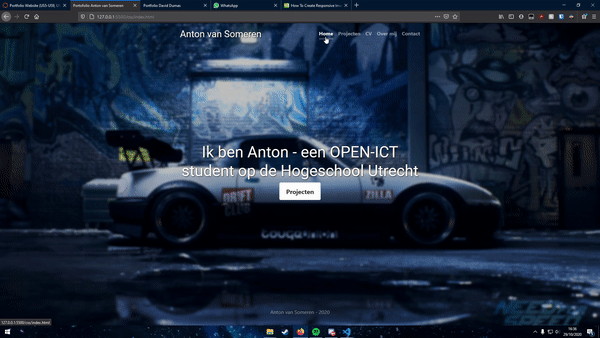

Portofolio website
In het eerste semester van OPEN-ICT moesten wij een portofolio website maken. Dit was een zeer leuk project, omdat je heel veel vrijheid had in de keuzes die je kon maken. Als je de portofolio websites vergelijkt van alle leerlingen zie je ook dat iedereen andere oplossingen heeft bedacht voor verschillende problemen.
De website moest responsive, interactief en een functionele contact funtie hebben. Mijn website heeft een kalm kleurenpalet zodat het zakenlijker overkomt.